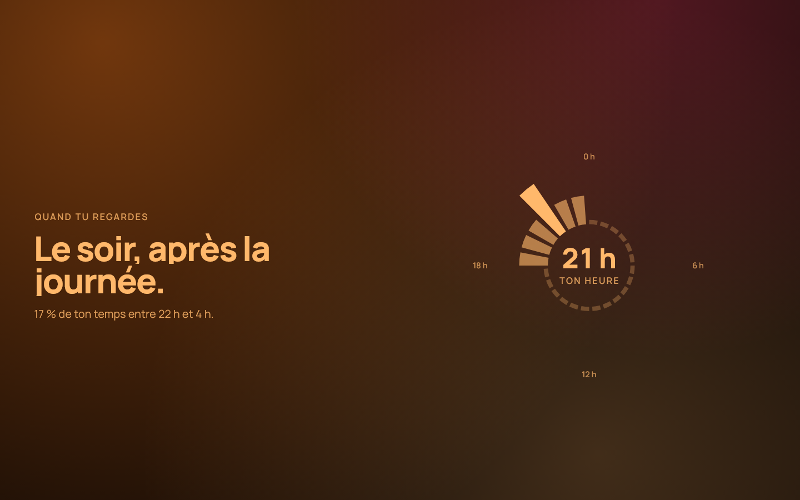
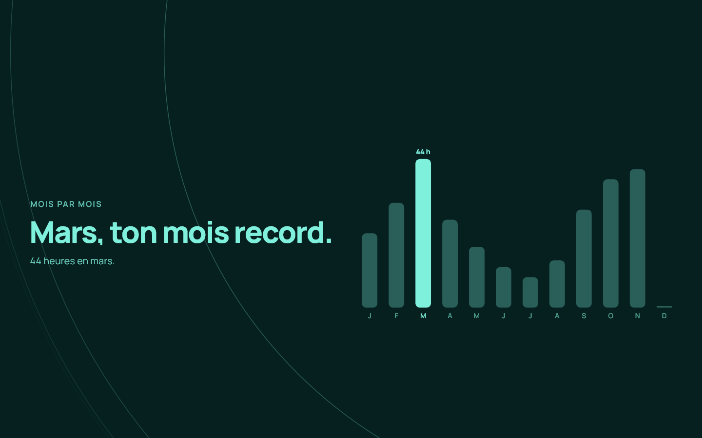
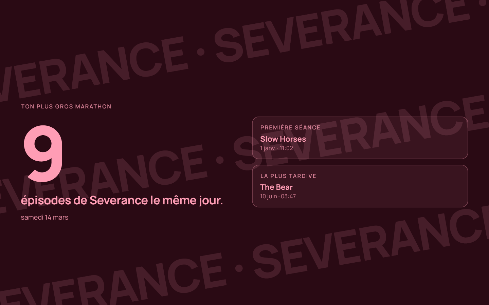
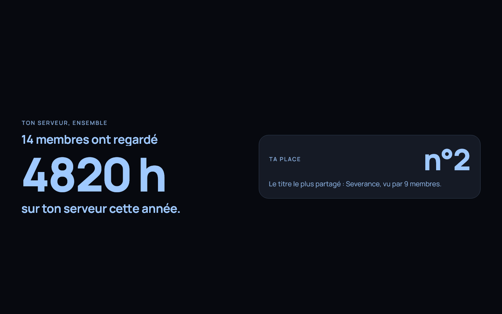
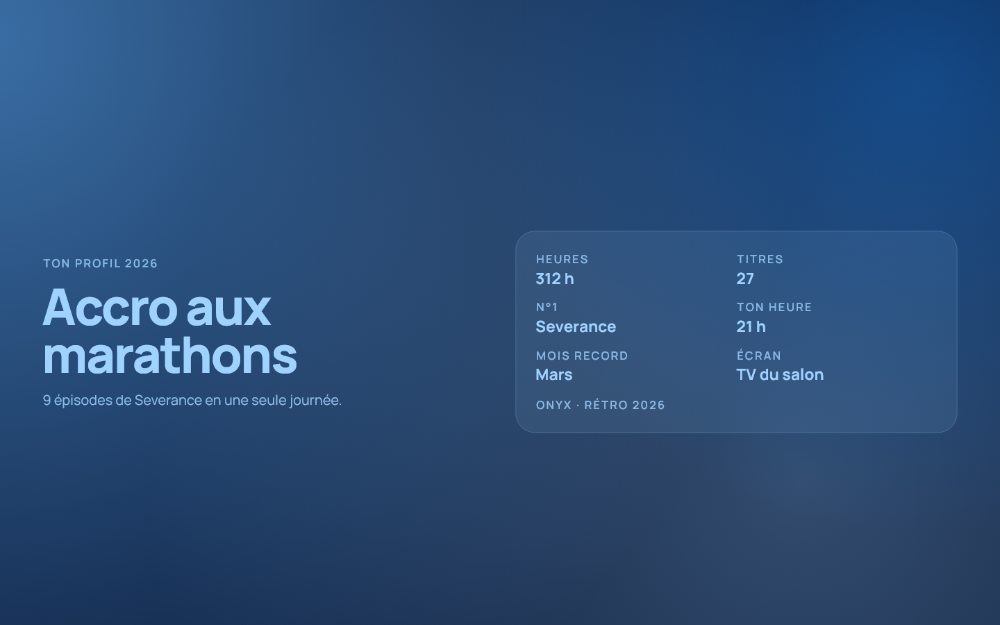

Même principe que pour les quatre premiers : l'onglet Actuel est le vrai rendu de l'app sur PC, A et B sont deux pistes animées. Tout en bas, trois idées d'image de récap que chacun pourra partager à la fin.
1–4 faits (mur, chiffre géant, logo, podium)Tes écransL'écran des appareils est retiré de l'app : la story passe à 9 écrans
ÉCRAN 5
Quand tu regardes

Quand tu regardes
21 h
Le soir, après la journée.
17 % de ton temps entre 22 h et 4 h.
Quand tu regardes
Le soir, après la journée.
Ton heure : 21 h. 17 % de ton temps entre 22 h et 4 h.
0 h6 h12 h18 h23 h
ÉCRAN 6
Mois par mois

Mois par mois
Mars, ton mois record.
JFMAMJJASOND
Mois par mois
Mars, ton mois record.
44 heures en mars.
ÉCRAN 7
Tes moments

Ton plus gros marathon
9
épisodes de Severance le même jour.
samedi 14 mars
Première séanceSlow Horses
1 janv.11:02
La plus tardiveThe Bear
10 juin03:47
Tes moments
Ton année en trois séances.
janv.févr.marsavr.maijuinjuil.aoûtsept.oct.nov.
Première séance · 1 janv. 11:02Slow Horses
Ton plus gros marathon · sam. 14 mars9 épisodes de Severancele même jour
La plus tardive · 10 juin 03:47The Bear
ÉCRAN 8
Ton serveur, ensemble

Ton serveur, ensemble
14 membres ont regardé
4 820 h
sur ton serveur cette année.
Le titre le plus partagéSeverancevu par 9 membres
n°2ta place sur 14
Ton serveur, ensemble
14 membres ont regardé
4 820 h
sur ton serveur cette année.
Le titre le plus partagéSeverancevu par 9 membres
Ta placen°2sur 14 membres
ÉCRAN 9
Ton profil, et la fin

Ton profil 2026
Accro aux marathons
9 épisodes de Severance en une seule journée.
Partager l'imageRevoir
Ton profil 2026
Accro aux marathons
9 épisodes de Severance en une seule journée.
Heures312 h
Titres27
N°1Severance
Ton heure · mois record21 h · mars
IMAGE DE RÉCAP
Ce qu'on partage à la fin
Une image au format story (1080 × 1920), générée par l'app depuis le rapport. Sur téléphone, elle part par le menu de partage ; sur PC, elle s'enregistre dans Téléchargements ; sur TV, pas de partage. Trois pistes, toutes aux couleurs du profil, avec les vrais chiffres de l'année.
R1 · L'affiche ★
L'année comme une affiche de film : l'affiche du n°1 en haut, le profil comme titre, les chiffres en générique. Dans le monde du cinéma, et différente pour chaque membre.
R2 · Le ticket
Un ticket de séance au nom du membre : le profil en grand, quatre chiffres, un talon. Reprend les tickets de l'écran 7.
R3 · La mosaïque
Nom et profil, le top 5 en vignettes, quatre cases de chiffres. La plus complète, la moins surprenante.
Ce que je ferais
Écran 5 : B, la journée à plat sur PC ; l'horloge reste sur téléphone, où elle tient mieux.
Écran 6 : A, les barres sur toute la largeur.
Écran 7 : B, la frise : c'est le seul écran qui raconte l'année dans le temps.
Écran 8 : A, le cercle des membres, sans rien de plus que ce que le serveur envoie déjà.
Écran 9 et image : A avec R1, l'affiche : le dernier écran montre l'image telle qu'elle partira, avec le bouton pour la partager.
L'image de récap, c'est la phase 5 du plan : l'app dessine l'image hors écran et la donne au menu de partage du téléphone, ou l'enregistre sur PC. Rien ne passe par un service externe.